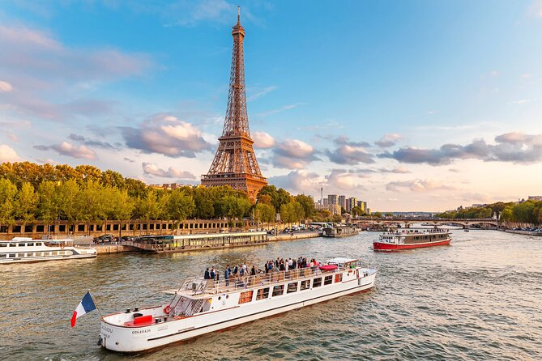
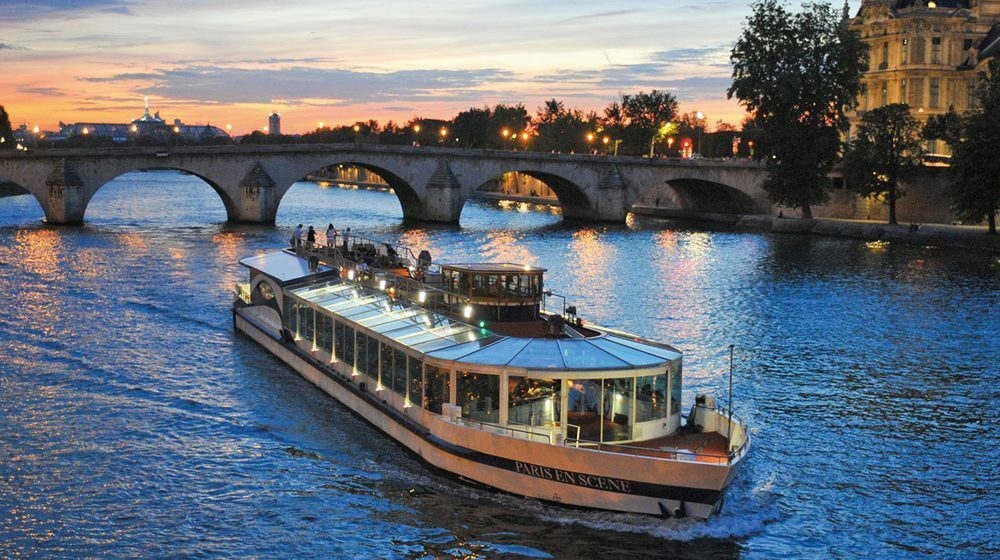

A França é historicamente o país mais visitado do mundo, e Paris desempenha papel central nesse cenário há séculos. Desde o século XIX, com a expansão das ferrovias e das exposições universais, a cidade se consolidou como símbolo de cultura, arte e sofisticação. O turismo parisiense cresceu junto com sua reputação global como capital cultural e romântica.
Paris recebe cerca de 30 milhões de visitantes por ano (incluindo domésticos e internacionais), com receitas turísticas que ultrapassam dezenas de bilhões de euros. A cidade mantém alta popularidade global e uma forte taxa de retorno, especialmente entre turistas europeus e americanos. O turismo é um dos pilares econômicos da região.
Entre os principais pontos turísticos estão a Torre Eiffel, o Museu do Louvre e a Catedral de Notre-Dame. Passeios pelo Rio Sena, bairros como Montmartre e a gastronomia francesa completam a experiência. Paris é praticamente um “museu a céu aberto”.


Para voltar à página principal, clique aqui.